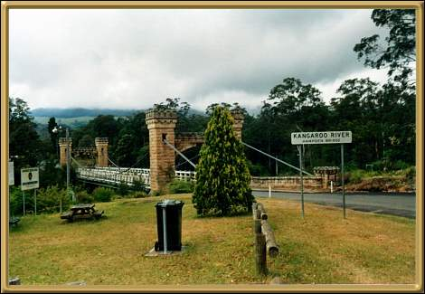

Photographer: Mark Stokes
An historic bridge. There's quite a lot of historic buildings in this vicinity. Close by is Nowra, a large town on the New South Wales coast, fast becoming a very popular tourist area.